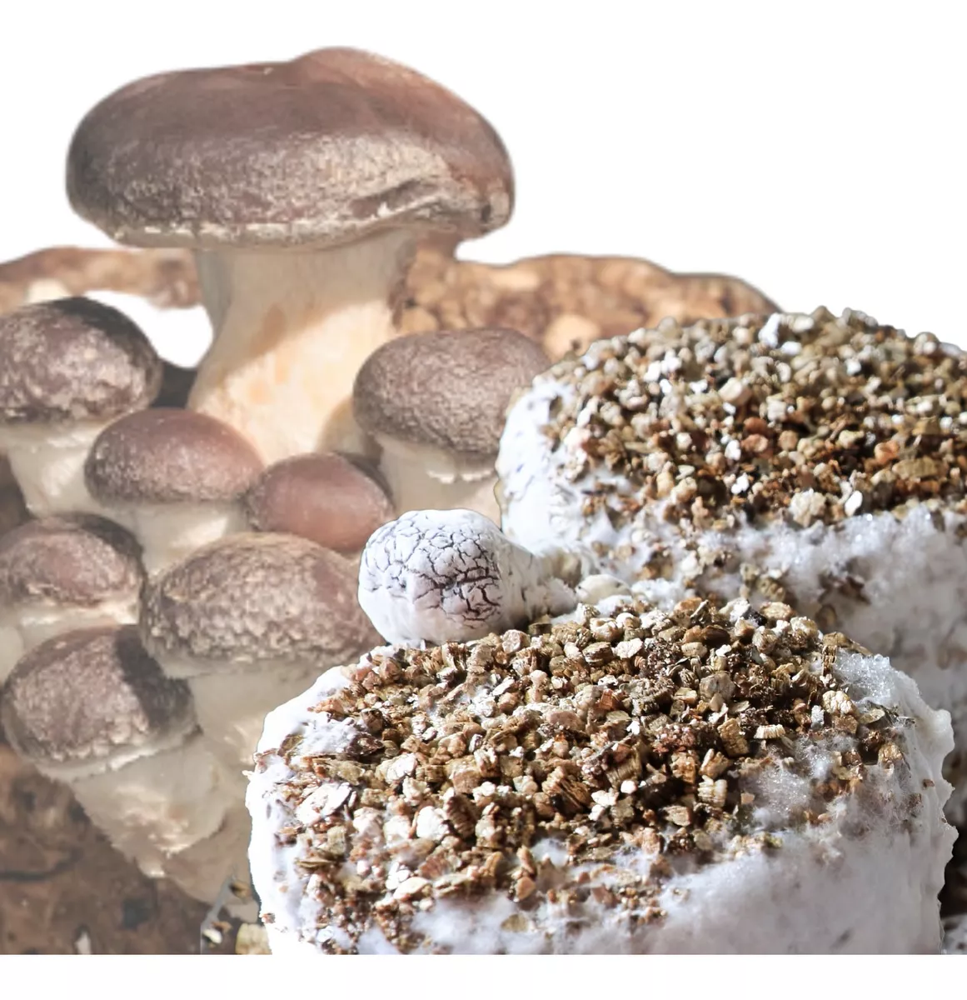
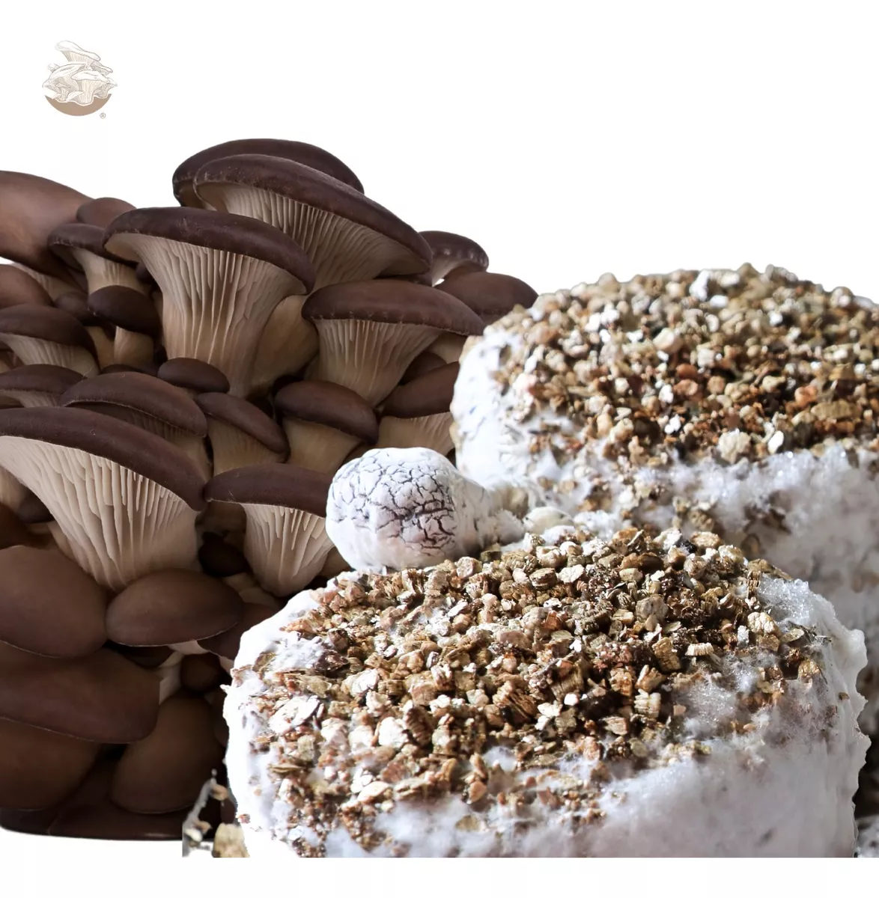
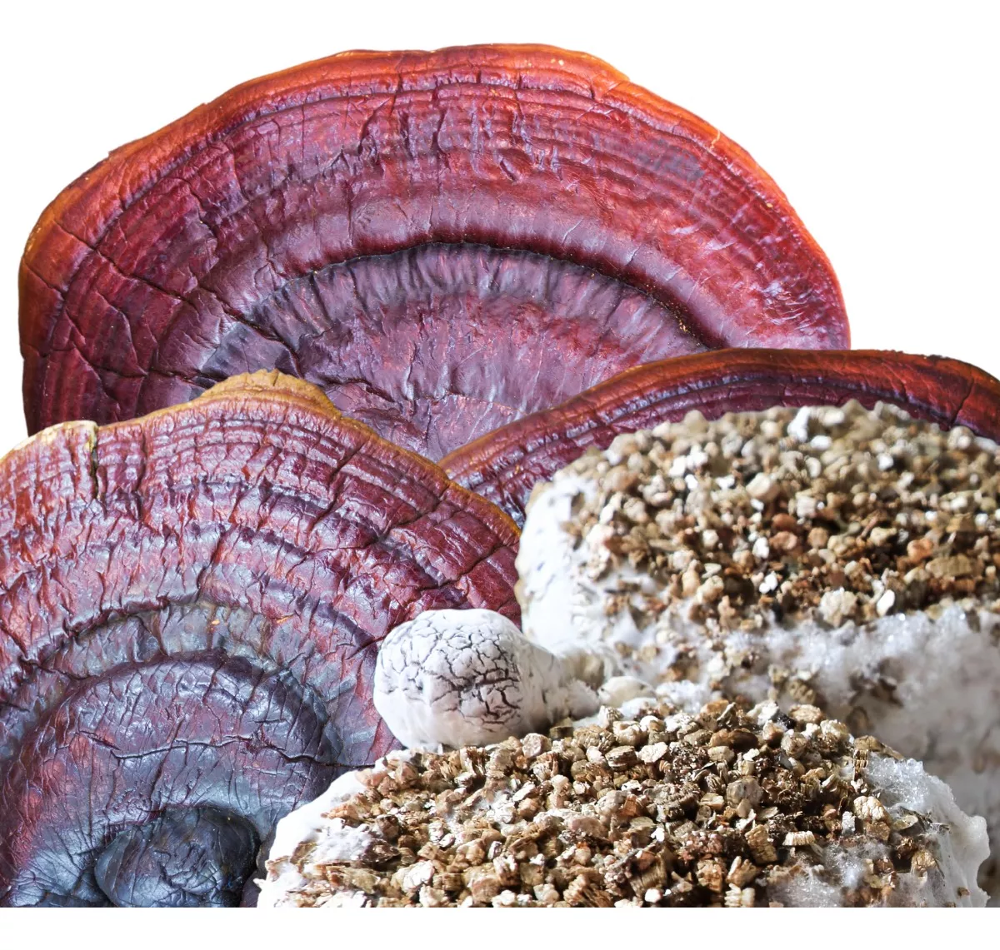

En Fung-e, nos dedicamos a la producción y venta de setas gourmet de la más alta calidad, cultivadas mediante procesos sustentables y amigables con el medio ambiente. Nuestra pasión por la naturaleza y el compromiso con la sostenibilidad se reflejan en cada etapa de nuestra producción, desde la siembra hasta la cosecha.
Nuestro Proceso

Cultivo Responsable
Utilizamos métodos de cultivo ecológicos que minimizan el impacto ambiental. Nuestras setas son cultivadas en sustratos orgánicos, reutilizando materiales y reduciendo los residuos. Además, optimizamos el uso del agua y la energía, garantizando un producto fresco y natural.
Calidad Excepcional
Cada seta es cuidadosamente seleccionada para asegurar que solo las mejores llegan a su mesa. Nos enorgullecemos de ofrecer un producto libre de pesticidas y aditivos químicos, preservando su sabor auténtico y su valor nutritivo.
Compromiso con la Comunidad
Apoyamos a las comunidades locales, fomentando prácticas agrícolas justas y colaborativas. Creemos en un modelo de negocio que beneficia a todos, desde nuestros trabajadores hasta nuestros clientes, promoviendo una economía circular y responsable.
Nuestros Productos
Setas Shiitake
Con un sabor profundo y terroso, las setas Shiitake son perfectas para realzar cualquier platillo gourmet. Su textura carnosa y sus propiedades nutricionales las convierten en una opción saludable y deliciosa.
Setas Ostra
Con su delicado sabor y versatilidad culinaria, las setas Ostra son una adición exquisita a cualquier receta. Son ideales para salteados, sopas y guisos, aportando un toque de elegancia y sofisticación.
Setas Maitake
Conocidas por su complejo perfil de sabor y sus beneficios para la salud, las setas Maitake son una joya culinaria. Su textura única y su sabor umami las hacen imprescindibles en la cocina gourmet.
¿Por Qué Elegirnos?
En Setas Gourmet Sostenibles, no solo vendemos setas; ofrecemos una experiencia culinaria que respeta y protege nuestro planeta. Cada compra que realiza apoya prácticas agrícolas sostenibles y contribuye a un futuro más verde y saludable.